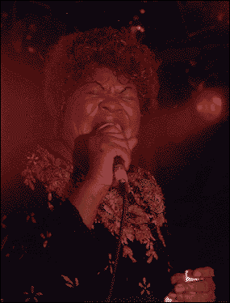
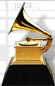
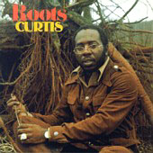
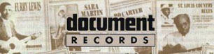
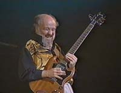

(события - объективно, толкования - сердцу не прикажешь)
2000 |
январь |
 |
Коко Тейлор предпринимает еще одну попытку открыть свой клуб в Чикаго. Новое блюзовое заведение называется Koko Taylor's Celebrity и, не боясь конкуренции, располагается всего в пяти кварталах от ставшего уже всемирно известным клуба Buddy Guy's Legends. |
награды:
11/1/2000г. Блюз-Фонд (The Blues Foundation) объявил имена претендентов на 21ю премию им.В.К.Хэнди (21st Annual W.C. Handy Blues Awards). Церемония состоится 5 мая, в мемфисском театре "Орфеум", штат Теннессии, и на легендарной Бил-Стрит пройдет двухдневный блюз-фестиваль. Распорядителями церемонии выступят певица Рас Браун (Ruth Brown) и легендарный мемфисский певец Рафас Томас (Rufus Thomas). (Автору "Выгуливая собачку" ("Walking The Dog") в марте исполнится 83 года!)

В.К.Хэнди прозван "отцом блюза" просто потому, что именно он был тем профессиональным композитором, который впервые опубликовал ноты песни со словом "блюз" в названии. Позже он был одним из самых пламенных пропагандистов блюза. И его перу принадлежит целый ряд мелодий, почитаемых "золотыми блюзовыми стандартами". Премии его имени вручаются с 1980 года. Церемонию проводит некоммерческая организация Блюз-фонд. Она собирает международную комиссию экспертов блюза, которая выбирает лауреатов из списка, предложенного почитателями блюза через блюзовые журналы. В нынешнем году в "выдвижении кандидатов" приняли участие 31 000 человек.
По традиции, церемония, кроме официальной части, включает в себя парад по улицам Мемфиса лауреатов и номинантов премии предыдущих лет; блюзовый симпозиум и диспуты - для теоретиков, и блюзовые классы (открытые уроки) - для практиков. Номинанты нынешнего года будут выступать в блюзовых клубах на Бил-Стрит и вокруг.
Список номинантов очень велик, если он интересует вас полностью - обратитесь к первоисточнику: http://www.handyawards.com/2000/nominees/printablenominees.html А из приятных сюрпризов стоит отметить возвращение на большую блюзовую сцену певицы по имени Одетта (Odetta). Ей 68 лет, 51 год из них она - в профессиональом шоу-бизнесе. Кстати, она номинируется и на "Грэмми".

Лучший альбом современного блюза (Contemporary Blues Album):
В категории "Лучший новый артист" (Best New Artist) номинирована блюзовая певица-гитаристка Сюзан Тадеши (Susan Tedeschi)
Результаты выборов комиссии из членов Национальной Академии искусства и науки звукозаписи (The National Academy of Recording Arts & Sciences) будут объявлены 23 февраля, в Лос-Анжелесе, на 42 церемонии вручения "Грэмми" (The 42nd Annual GRAMMY Awards Show). Все действо будет транслироваться, в том числе, и по сети. www.grammy.com
Потери:

В возрасте 57 лет скончался певец Куртис Мэйфилд (Curtis Mayfield).Он начинал петь в группах, исполнявших "госпэлл". В 1957м собрал поп-группу "Впечатления" ("Impressions"), в 70-х начал выступать соло. И ныне дважды принят в Зал славы рок-н-ролла: в 1991г. - как участник "Impressions", а в 1999г. - как солист. По стилю он представлял даже не собственно "соул", а некую "черную поп-музыку", как это классифицируется в биллбоарде. Но, рожденный в Чикаго в 1942, он рос вместе с новым электрическим блюзом этого города, и его поп-музыка обладала крепкими черными корнями…
"You know, to talk about the 60s almost
brings tears to my eyes.
What we did. What we all did.
We changed the world."
Curtis
http://www-2.roughguides.com/rock/entries/entries-m/MAYFIELD_CURTIS.html
В записи:
|
 |
| "Слепой
хряк" (Blind Pig) выпускает
альбом "Мадди
Уотерс - Потерянные записи" ("Muddy
Waters - The Lost Tapes"). Альбом с
сидиромным дополнением позволяет не
только послушать прежде не
публиковавшиеся записи выступлений
отца чикагского блюза, но и посмотреть
на дисплее компьютера его концертные
съемки и кино-интервью. Блюзбэнд Мадди
Уотерса включает: George "Harmonica" Smith,
"Pinetop" Perkins, Sammy Lawhorn, Pee Wee
Madison, Calvin "Fuzz" Jones, and Willie "Big
Eyes" Smith. Так же фирма выпускает из архивов сборник поздних записей Пи-Уи Крейтона (Pee Wee Crayton "Early Hour Blues"). |
|
Теларк (Telarc Records) готовит новый "супер-проект": "Супер губные гармоники" ("Superharps"). "Суперами" выступают James Cotton, Billy Branch и Charlie Musselwhite, а так же певец (в недавнем прошлом - солист "Полной комнаты блюза" (Roomful Of Blues) Сахарный Рэй Норсиа (Sugar Ray Norcia). Так же вышел альбом "Блюз у меня на плечах" ("Blues On My Back") Троя Тернера (Troy Turner). В конце января обещаны новые альбомы Сэма Лея (Sam Lay) - барабанщика легендарных составов Мадди Уотерса, Хаулин Вулфа и Пола Баттерфилда; и великолепного вокалиста-виртуоза Терри Иванса (Terry Evans) - широкой публике известного участием в фильме "Кроссроудз". |
|
"Свидетельство" (Evidence Records) борется за сегодняшний день кантри-блюза, выпуская по специально-доступной цене антологию современных (или относительно недавних) кантриблюзовых записей с приложением богато иллюстрированного 48-страничного буклета - "Живой Сельский Блюз" ("Living Country Blues"). Представлены записи Cephas and Wiggins, Cedell Davis, James "Son" Thomas, Lonnie Pitchford and Othar Turner. |
| "Делмарк" (Delmark Records) в январе представляет сборник записей лучших чикагских клубных артистов под великолепным названием "Чикаго - это просто блюзбэнд" ("Chicago Ain't Nothin' But a Blues Band"); в него включены записи Саннилэнда Слима (Sunnyland Slim), Генри Грея (Henry Gray) и недавнего гостя Москвы, участника Х блюз-фестиваля "EFES Pilsner" Эдди "Зе Чифа" Клиаватера (Eddy "The Chief" Clearwater) и др. Из архивов извлечена запись для альбома "Сонный Джон Истс в Европе" ("Sleepy John Estes In Europe"). Другие новые альбомы "Делмарк": Jimmy Johnson "North/South"; Syl Johnson "Talkin' 'Bout Chicago"; Curtis Jones "Lonesome Bedroom Blues"; Jimmy Burns "Night Time Again"; Aaron Moore "Boot 'Em Up"; The Rockin' Johnny Band "Man's Temptation". |
В сети:

Очень интересный проект - картография истории афро-американской музыки. Пока готовы только две карты: "Места рождения музыкантов Миссиссиппи" и "Джазовый и ритмэндблюзовые памятные места в пригороде Нового Орлеана". Не очень продумана интернетная демонстрация карт, но все равно - любитель блюза и джаза заглянет сюда с добрым сердцем. (Кстати, почему то каждый посетитель там - первый!). http://www.execpc.com/~frontpag/bluesmaps.htm
Все выбирают "лучшее тысячелетия…". У всего этого блюза руки пока не дошли. Да и есть официальная отсрочка на год… А вот в журнале "Blues/Soul Scene" редакторы составили свой список. По-своему любопытный… Хотя без вечного BBKING "Live At Apollo" не обошлось. http://www.globaldialog.com/~jeff61/millennium.html
Бывшие новости |
Январь-Февраль 1999 |
Март 1999 |
Ноябрь-Декабрь 1999
Январь 2000 |
Февраль 2000 |
Март 2000 |
Апрель 2000